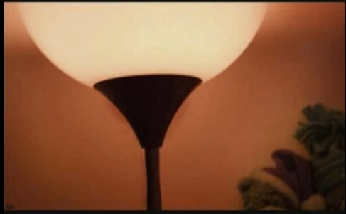

Projet CamlT'OCR
Présentation
Les news !
Camlt-ocr est un projet d'O.C.R. Ce projet scolaire est realise en OCaml par quatre eleves de l'EPITA, dans le cadre de l'annee d'INFOSPE. La soutenance n01 aura lieu jeudi 24 Octobre. A l'issue de cette derniere, les sources de notre debut de projet seront disponibles ici meme !